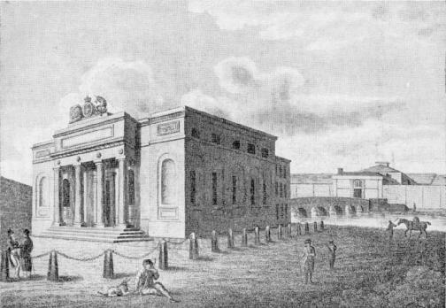

The Wood-Quay, and N. E. Suburbs of Galway.
THE
HISTORY
OF
GALWAY.
PART IV.
THE MODERN STATE AND DESCRIPTION OF THE TOWN.
I. TOPOGRAPHY.
1. Situation and Natural Advantages.
GALWAY is advantageously situated on the side of a broad and rapid river, to which it gives name, and by which the extensive lake Corrib pours its redundant waters into the ocean. It lies in \circ 16' north latitude, and \circ 58' west longitude from Greenwich; is distant from Dublin, in nearly a direct line, about 104 Irish miles, and is the most westerly town of consequence in Europe. The bay is esteemed one of the noblest entrances in the world: it extends nearly thirty
miles eastward of the isles of Arran, and contains innumerable roads and harbours. The haven is safe and spacious, and is capable of affording protection to the largest fleets. The town itself, to which vessels of upwards of four hundred tons burden can come up, is admirably situated for commerce with Europe and the Indies, and is celebrated for having formerly been one of the greatest commercial towns in the British dominions. Even after the civil wars of the seventeenth century, when the town was much reduced from its former opulence, the cities of Ireland ranked in the following order, Dublin, Galway, Waterford, Cork, and Londonderry; but it is now surpassed not only by all these, but also by many other places then scarcely known or heard of. This change is easily accounted for: Galway was always a Catholic town, and, therefore, felt more severely than others the fatal effects of those impolitic enactments, which so long and so heavily afflicted the greater part of his majesty's subjects in Ireland. It would not however be surprising, even after all it has suffered, if it should, from its situation, yet become one of the principal emporiums for trade between these countries and the new world.
2. Climate and Salubrity.
Though Galway, in common with the western coast of Ireland, is more liable to rains than most other parts of the island, from its contiguity to the great Atlantic ocean, yet it is not subject to those inconveniences which generally attend a humid atmosphere. The climate is esteemed rather favorable,
and epidemical distempers are seldom prevalent. The town, situate between the lake on the north, and the bay and Atlantic on the west, always enjoyed a free circulation of air, which must have contributed to render it healthy. The many facilities for convenient and excellent sea-bathing, (which draw crowds of visitors annually during the summer season,) also conduce to the health of the inhabitants. Contagious disorders are of late scarcely heard of, owing, perhaps, to the demolition of the old fortifications, which, by giving a freer admission of air through the long and narrow streets of the town, has likewise helped to increase its salubrity.
3. Extent, Streets, and Buildings—Improvements suggested.
Galway is built on the extremity of a narrow peninsulated neck of land, which rises with a gentle ascent from the sea and river. It formerly contained within the walls (which described nearly an oval figure) 3426 square perches, or 21 acres 1 rood and 26 perches, Irish plantation, by actual admeasurement. The character of this, like all other ancient cities, is that of a fortress, the greatest quantity of building crowded into the smallest space, with walls, gates and ditches of defence. For more than half a century before 1792 the fortifications had been going fast to decay: the abbey-gate was pulled down in 1779, and the remainder of these mouldering bulwarks were falling to the ground. Since that time, however, they have been almost entirely demolished, and handsome buildings are rapidly extending on all sides, so that the town now covers nearly double the space which was formerly occupied within the walls. The old Spanish-built castles, which periods of turbulence and danger rendered necessary for personal security, are gradually disappearing, and convenient modern edifices are rising on their ruins. Several of these ancient structures, though some centuries built, are still in good repair, and many of them are inhabited by numerous families. They are generally square, with a small court in the centre, and an arched gate-way leading to the street: but are, however, daily giving place to more commodious dwellings, better suited to the present improved state and
manners of society. Dominick-street, at the west end of the town, which contains a number of excellent houses, chiefly inhabited by many of our most respectable gentry, was laid out and built within the last mentioned period. The town has also improved considerably since the Union. Towards the east entrance, round Meyrick square, formerly the green, on the heights of Bohermore, and in the interior streets, several fine houses have been erected. Mr. Thomas Hynes, an eminent West-India merchant, and the Messrs. O'Connor, are deserving of particular notice for their laudable exertions in this line to improve the appearance of their native town.
Although most of the dwelling-houses are old, there are, however, several excellent private buildings interspersed throughout the town. Amongst these the following will attract particular attention: the handsome dwelling of Mr. Daly, the late mayor, situate in Back-street, (which street was so called from its backward situation,) and that opposite to it, built by the late Martin Lynch; the elegant dwellings and spacious stores, in the same street, built by Messrs. Walter and John Joyce; the residence of the late lord Ffrench, facing Middle-street, (so named from its central situation;) the large houses in Shop-street, (so called because in this street the first shops were opened,) built by the late Nicholas Lynch, of Barna; and those recently raised by Mr. Morgan Connolly; the new buildings and shops erected by Mr. Thomas Hynes, on the site of the old free-school, in High-street, (a street so termed from its high or elevated situation;) the handsome houses in Watergate-street, built by the late Nicholas Burke Edmond; several good houses at the Spanish-parade, (a small square at the S. W. corner of the town, where the Spanish merchants were formerly accustomed to assemble;) those built by the late Michael Rush at the church-yard leading to Lombard-street, (a part of the town so called from the Lombards, a mercantile people of Italy, who formerly resorted hither for the purpose of traffic.) To these, as more recent improvements, may be added the road in the east suburbs, leading by Erasmus Smith's new school to Oranmore, the alterations making by Mr. Eyre at the green, the projected quay, the handsome bridge lately built over the river
at Newtown-Smith, and the intended street to the new court-house, which, with many other private buildings in progress, add considerably to the extent and appearance of the town.
From these pleasing prospects of improvement, it is painful to turn to the shamefully neglected state of the streets, which, for many years past, have been perhaps the worst paved, and least attended to, of any other in this country. From the numerous holes in the pavement, and the heaps of accumulated dirt with which they are almost continually filled, many streets are often nearly impassable, particularly in dark winter nights, when it is absolutely hazardous to venture abroad. Surely these are subjects which require the most serious and immediate attention. Although much has been said about the misapplication of the tolls and customs, which by the charters were to be applied "to the walling and paving of the town," yet it should be considered that there is not now, nor has there been for many years past, (since the unprincipled alienation of the corporation property,) any other fund whereout to defray the salaries of the mayor and the other municipal officers. The only remedy, therefore, for this daily increasing evil appears to be that of a local tax, to be imposed by authority of parliament, for paving, lighting and cleansing the streets, and for establishing a sufficient police to keep a nightly watch. The advantages which the inhabitants, after a little experience, would find themselves to enjoy, would be so considerable, and the rateable contribution on each individual so trifling, that it is hoped this salutary and indispensible measure may be speedily carried into effect, with prudence, economy and zeal, for the improvement and interest of the town.
4. Population.
The population of Galway is much greater than, from a superficial view of the place, would be immediately supposed. This circumstance has given rise to various contradictory computations on that head. In a former page (192, note) a view of these different statements has been given; and although the estimate there made of the inhabitants of the town and county of the town, at 40,000 souls, has been by some esteemed as overrated, the author has not as yet heard sufficient
reasons to induce him to alter that calculation: on the contrary, when the rapid increase for the last seven years shall be considered, and that the return under the Census Act of 1812 was confessedly deficient, it is still thought the most accurate estimate of the population of Galway (including the county of the town) at the present day.
6| Name and description of Parishes, &c. | Inhabited Houses. | By how many Families. | Houses now building. | Other Houses uninhabited. | Families chiefly employed in Agriculture. | Families chiefly employed in Trade, Manufactures and Handicraft. | All other Families not comprised in the two preceding Classes. | Males. | Females. | Penalties |
|---|---|---|---|---|---|---|---|---|---|---|
| The West Suburbs | 19 | 500 | 15 | 43 | 19 | 224 | 147 | 1030 | ||
| New-castle Road | 33 | 41 | 4 | 18 | 8 | 12 | 94 | |||
| Dargan | 49 | 42 | 4 | 16 | 10 | 13 | 86 | |||
| Bushyurk | 6 | 6 | .. | 6 | .. | .. | 17 | |||
| Ballagh | 12 | 15 | .. | 16 | .. | .. | 16 | |||
| Corvillen | 6 | 6 | .. | 6 | .. | .. | 13 | |||
| Keanhill | 8 | 8 | .. | 8 | .. | .. | 12 | |||
| Paulnashrubane and Attishonick | 11 | 11 | .. | 11 | .. | .. | 17 | |||
| Gertnackery | 11 | 11 | .. | 10 | 1 | .. | 16 | |||
| Dollough | 7 | 7 | .. | 7 | .. | .. | 16 | |||
| Woolstock | 8 | 8 | 1 | 8 | .. | .. | 15 | |||
| Limarrechan and Oranwell | 3 | 3 | .. | 8 | .. | .. | 23 | |||
| White-Strand | 12 | 13 | .. | 15 | 4 | 9 | 7 | |||
| Bathing-house-road | 6 | 6 | 1 | 9 | .. | 6 | 6 | |||
| Capegh | 19 | 19 | .. | 11 | .. | 6 | 6 | |||
| Paulnarchery | 21 | 21 | .. | 11 | .. | 6 | 6 | |||
| Knocknacarras | 13 | 19 | .. | 19 | .. | .. | 6 | |||
| Clytane | 14 | 18 | .. | 15 | .. | 11 | 6 | |||
| Raboon | 38 | 38 | .. | 32 | .. | 5 | 16 | |||
| Shastalla | 17 | 17 | 9 | 22 | 5 | 10 | 79 | |||
| Letragh | 22 | 15 | .. | 11 | .. | 2 | 12 | |||
| Badger-hill | 13 | 12 | .. | 13 | .. | 3 | 88 | |||
| Drum | 11 | 15 | .. | 13 | .. | 3 | 88 | |||
| Bodlybeg | 13 | 15 | .. | 13 | .. | 3 | 88 | |||
| Steve-Marcus | 16 | 15 | .. | 14 | .. | 3 | 88 | |||
| Mindoon | 15 | 15 | .. | 15 | .. | 12 | 88 | |||
| Boherard | 27 | 17 | .. | 15 | .. | 3 | 12 | |||
| Sherrett's Poal-narchery | 38 | 38 | .. | 17 | .. | 3 | 12 | |||
| Rama | 54 | 54 | .. | 22 | .. | 32 | 12 | |||
| Lackalea | 6 | 6 | .. | 6 | .. | .. | 15 | |||
| New-Village | 10 | 15 | .. | 10 | .. | .. | 17 | |||
| Pureemity | 23 | 23 | .. | 23 | .. | 5 | 13 | |||
| Keerate | 13 | 13 | .. | 13 | .. | .. | 16 | |||
| Barke's Village | 4 | 4 | .. | 3 | .. | 1 | 9 | |||
| Ballymoneen | 8 | 8 | .. | 8 | .. | .. | 12 | |||
| Kimmenstarr | 6 | 6 | .. | 6 | .. | .. | 12 | |||
| Cappogh | 10 | 10 | .. | 10 | .. | .. | 12 | |||
| Aile | 14 | 14 | .. | 14 | .. | .. | 12 | |||
| Cloughkulty | 18 | 18 | .. | 13 | .. | 6 | 6 | |||
| Balfard, Lough, Inch & Knock-nacarras | 4 | 4 | .. | 4 | .. | .. | 10 | |||
| Mountain Acres | 3 | 3 | .. | 3 | .. | .. | 7 | |||
| West Trunky | 16 | 16 | .. | 16 | .. | .. | 17 | |||
| East Trunky | 16 | 16 | .. | 16 | .. | .. | 17 | |||
| Attishonick | 4 | 4 | .. | 4 | .. | .. | 9 | |||
| The streets of the town, & in the parish of St. Nicholas, viz. | ||||||||||
| Cladgh | 351 | 352 | .. | 5 | 6 | 35 | 355 | |||
| Nune' Island | 24 | 25 | .. | 6 | .. | 12 | 51 | |||
| Little Bridge-street | 4 | 4 | .. | 1 | .. | 4 | 51 | |||
| Dennick-street | 38 | 40 | .. | 2 | .. | 11 | 159 | |||
| Great Bridge-street | 6 | 14 | .. | 6 | .. | 6 | 31 | |||
| Dock and Quay | 23 | 23 | .. | 6 | .. | 51 | 38 | |||
| Quay-lane | 6 | 6 | .. | 6 | .. | 4 | 32 | |||
| Spanish-penrose | 7 | 11 | .. | 6 | .. | 11 | 32 | |||
| Rack-street | 38 | 68 | .. | 6 | .. | 38 | 124 | |||
| White-hall | 7 | 15 | .. | 6 | .. | 4 | 124 | |||
| Abbey-gt. st. (up) | 19 | 19 | .. | 6 | .. | 11 | 324 | |||
| Cross-street | 28 | 73 | .. | 1 | 1 | 32 | 124 | |||
| Migla-street | 28 | 82 | .. | 4 | 4 | 4 | 124 | |||
| Court-house-lane | 7 | 7 | .. | 6 | .. | 5 | 124 | |||
| Play-house-lane | 11 | 83 | .. | 6 | .. | 15 | 324 | |||
| Honeye's-lane | 7 | 83 | .. | 6 | .. | 15 | 324 | |||
| Quay-street | 10 | 12 | .. | 6 | .. | 15 | 324 | |||
| High street | 17 | 83 | .. | 6 | .. | 15 | 324 |
| Name and description of Parishes, &c. | Inhabited Houses. | By how many Families. | Houses now building. | Other Houses uninhabited. | Families chiefly employed in Agriculture. | Families chiefly employed in Trade, Manufactures and Handicraft. | All other Families not comprised in the two preceding Classes. | Males. | Females. |
|---|---|---|---|---|---|---|---|---|---|
| Main-guard, Church-p. (prec.) | 11 | 57 | 13 | 18 | 15 | 23 | |||
| Burtermilk-lane, Shop-street, Church-lane, Morgan's-lane, Lombard-street, Murray's-lane, Market-street, Gut-lane, Bowling-green, Abbey-gt.-at. (low.) William street, Barrack-lane, Newtown-smith, Wood-quay, Rosemary-lane, Sockeen, Corballymorgan, Ballynahowne | 10 | 58 | 15 | 22 | 20 | 16 | |||
| That part of the parish of St. Nicholas within the Co. of the town, viz. | 19 | 21 | 14 | 116 | |||||
| Behermore, Beherberg, Meyrick-square, Hirmore, Ballytrait, Moneraghia & Old Gallow, Ballyhanmore, Part of Hinmore, or Mile-and, Glanmaille, Parkmore, Ballybane, N. E. and S. E. Wellpark, Marview | 13 | 52 | 21 | 25 | 19 | 166 | |||
| That part of the parish of Glanmaire within the Co. of the town, viz. | 19 | 21 | 15 | 159 | |||||
| Menlough, Castlegar Village, Merthispark and Doughlake, Balfinfile (Terrilan), Two-mileditch, Balfinberrune, (Carnabowne), Murroe, Balfoughane, Callagh, (Terrilan), Rowan and Globe, Village of Terrilan, Ballasooley, Bogvillage, (Carnabowne), Clocorkaneene, Burnabruckey, Balfygirrane, Castle-quarter, (Carnabrovene), Carringreen Village, Killeen Castle, Anglingham and Siraquruly, Stramoe, Rahulne Glbe, Total in the town and county of the town of Galway | 145 | 146 | 10 | 193 | 11 | 15 | 167 |
Attested by John Gribben and Luke Kennedy, the persons appointed by the grated Jury to take an account of the population in the county of the town of Galway, (the same amounting to 29,844 nos.) this 19th June, 1813, before us,
Edm. Pitt.Patrick, Mogus
Edw. Blake, Maghvani.
II. CONSTITUTION AND GOVERNMENT.
1. Corporation.
THE corporation of "the town and county of the town of Galway" is at present little more than a name: the ancient state and insignia of that formerly proud and opulent body have been entirely laid aside; the old and creditable offices of alderman, chamberlain, burgess, &c. have fallen into disuse, and its possessions have been alienated; so that it now seems to be upheld by the respectable family in which it has become almost hereditary, merely for the valuable patronage which it confers, and for the parliamentary representation of the town,
Admiralty of the Bay.
When Galway was a place of commerce, with numerous ships daily crowding into its harbour, this office was one of importance and emolument; but when that commerce ceased, and but a solitary vessel sometimes visited this neglected port, no wonder that the privilege, though before so carefully guarded, should gradually sink into decay: Accordingly, not the least mention is made of it for more than a century past, except on a solitary occasion, in the year 1745, when a whale, which happened to be stranded on the island of Mynish, in the bay, was taken by Mr. John Digby, proprietor of the islands of Arran, who extracted from it a considerable quantity of oil. This oil was seized by the mayor, who claimed it as admiral of the bay, and as a royalty or franchise belonging, under
which is commanded by means of the non-resident freemen. The decay, however, of such incorporations, according to the celebrated Adam Smith, Dr. Paley, and other high authorities, is not to be regretted. They were originally formed in times of necessity, and soon became universally distinguished for monopolizing and intolerant principles. Even still, though the mighty, and ever-moving machine of society has altered the situation of mankind, and changed the state of human affairs, these associations, with very few exceptions, retain the gloom and bigotry of former ages, and seem to be the last and favorite retreats of prejudice and intolerance. If, therefore, the peace and good order of cities and towns could be preserved by domestic and resident magistrates, under the direct control of the government of the country, there would not be much reason to regret the decline of these feudal institutions.
2. Courts—Municipal Regulations necessary.
For the numerous, though at present dormant or obsolete, privileges of the corporation of Galway, the reader is referred to the charters which will be found in the appendix. The mayor and recorder keep a court of record, which takes cognizance of civil pleas to any amount; and also hold sessions, at stated periods, for the trial of personal misdemeanors: but felonies and daily increasing crimes of magnitude are referred to the general assizes, which are held twice a year in the town. The want of an efficient police and a more active magistracy is loudly complained of by the principal part of the inhabitants, who to this deficiency entirely attribute the many street and house robberies which have been recently committed. That some municipal regulations are necessary seems to be conceded on all sides; and it is, therefore, hoped that the proper authorities will take such speedy means to remedy these defects as the nature of the evils complained of, and the circumstances of the town so urgently require.
III. COMMERCE, TRADE AND MANUFACTURES.
1. Decline of Commerce—Causes.
IN several parts of this volume the former extensive commerce of Galway has been mentioned; and the causes of its decline have been so distinctly pointed out, that it is considered unnecessary to repeat them here: it is esteemed equally so to spend much time in refuting the illiberal aspersions attempted to be cast on this ancient, respectable and long persecuted town, by a recent English tourist of some celebrity, who, from "report," thought proper to attribute its decline to want
of principle in its merchants—an imputation which almost every page in this work incontestibly proves to be unfounded. Had this gentleman but for a moment reflected on the past situation of this too frequently misrepresented country, he would have perceived that the decay of this, and of many other places in Ireland, is entirely attributable to civil commotions, to penal laws, and to the many mercantile restrictions imposed in favor of England for the two last centuries. It is, therefore, hoped that he may consider it an act of justice to a respectable class of individuals to retract what might have been perhaps inadvertently advanced, but which certainly affects the credit of a work, otherwise deserving well of Ireland.
2. Exports and Imports.
The commerce of Galway has, it is true, long since disappeared; but the causes of its decay have been already detailed. Wine, formerly its principal article of traffic, is no longer imported in any quantity; and the provision trade, which formerly flourished here, has long since deserted this port. Commerce has of late been chiefly confined to the export of corn; and for this branch, which commenced about the year 1805, the town is peculiarly well circumstanced, from its local situation and great facilities for water carriage. Since that period, the agriculture of the interior has been much improved, owing to the encouragement given to the farmers by the merchants of the town. The wheat and barley brought to market are esteemed of a highly superior quality; but the oats is in general of a very inferior kind. It has been calculated that, for some years past, the export of corn from this port averaged annually about 6000 tons. Kelp is also an old and considerable article of trade. It is principally
manufactured in Conamara, and is brought to the town by sea. For some years past about 4000 tons were annually exported, a considerable portion to the northern parts of Ireland, where it was much used in the manufacture of linen, and the remainder to England and Scotland. The price and consumption of this article, however, have of late very much diminished. Although, in 1808, it sold in Galway for 13l. a ton, at present it seldom exceeds 4l.; and the yearly exportation is also reduced to about 2500 tons, which is supposed to be occasioned by its inferiority to the Scottish kelp in foreign markets. Of late years, several cargoes of fine marble have been exported from the extensive quarries near the town; but this branch of trade seems also on the decline. The principal imports are American
There are some extensive marble quarries near Galway, out of which many of the ancient and modern edifices of the town were entirely built. The principal are those of Anglingham, near Menlo, and of Merlin-park. The marble of both these extensive quarries is of a beautiful jet black colour, and is susceptible of the highest polish; it is fine-grained, soft and easily wrought, and is much prised by artists. It occurs in considerable masses, with a straight fracture, on thin strata of plastic clay, or argillaceous paste; and solid blocks, often weighing upwards of four tons, and measuring from 18 to 20 feet long, and from 8 to 10 feet broad, are frequently raised, particularly at Anglingham. Mr. Stanley Ireland some years since shipped several cargoes to London, Liverpool, Bristol, Cork, Dublin, &c.: he also established a marble-yard in the town, and employed several workmen, who wrought a variety of elegant monuments, plain and sculptured chimney-pieces, tablets, slabs, side-board tables, &c.; but at present this trade is rather declining. The Merlin-park quarry was opened in 1814, and Mr. Blake, the proprietor, exported a few cargoes; but the industry, perseverance and resolution to encounter not only preliminary expense, but even temporary losses, to bring works of this kind to perfection, do not seem to have attended these undertakings. There is, however, little doubt, but that, if these quarries were worked with
flaxseed and timber, Swedish and Norway plank and deals, Petersburgh hemp and tallow, Swedish and English iron, steel, coals, &c. Messrs. John and James Burke, John Moore, Messrs. Denis and Hugh Clarke, Messrs. Martin and FitzGerald, James Costello, andAnthony Lynch, are at present the only merchants who carry on whatever little trade frequents this port. Although the quays and harbour are neglected, a convenient custom-house was built in 1807; it is a plain building, not very extensive, but at the same time fully sufficient for all the business transacted in it. The overplus duties, after defraying the expenses of the port establishment, add but very little to the national revenue, notwithstanding the praiseworthy exertions of the Hon. William le Poer Trench, brother of the Earl of Clancarty, and late collector of Galway, to promote the commercial interest of the town.
3. Corn Trade, Mills, Linen Manufacture, Breweries, &c.
What remains to be mentioned concerning the trades and manufactories carried on here will occupy but very little space: of these the flour business is the principal. The warm limestone soil of the country about Galway produces wheat of the finest quality, which meets a ready sale in the market, and this trade has consequently increased very considerably within the last few years. In 1790 there were but two flour-mills in the town, but at present there are twenty-three, which are kept continually at work, each possessing, even in the driest season, a constant supply of water from Lough Corrib. The fall and rapidity of the river render it in this respect peculiarly advantageous; and the facility of internal conveyance by the lake to so many points of the country might, with very little exertion, be made incalculably beneficial to the town. The quantity of wheat ground and dressed is very considerable, it is calculated to amount annually to upwards of 12,000 tons, part of which supplies the adjacent counties, and the remainder is generally sent by the canal boats to Dublin. Besides these, there are six oat-mills, two malt-mills, and three fulling-mills, which are constantly employed. There are also a bleach-mill and green on the Nuns Island, but the linen manufacture does not appear to have been a favorite branch of industry; and
therefore a linen hall, formerly erected in the west suburbs, has long since gone to decay. 'There is, in the same quarter, an extensive paper-mill, erected about 1785, and now conducted by Mr. Reuben Hughes: here different sorts of paper are manufactured, with which the Dublin markets are sometimes supplied. A public brewery, on an extensive scale, has been for some years past established at Newcastle, near the town, the property of Mr. Persse, of Roxboro', and another at Madeira Island, beyond the west bridge. The porter made here, but particularly in the former, has been much esteemed, and had for some time a good deal superseded the use of ardent spirits among the lower orders. This, however, interfered but little with Mr. Joyce's extensive distillery at Newtown Smith, in which superior spirits have, for many years past, been distilled under the superintendence of Mr. Finn.—The excise establishment of Galway, it is supposed, produces proportionably more to the public revenue than the duties of the port.
4. Chamber of Commerce.
Several of our most respectable merchants and traders have lately associated themselves as a Chamber of Commerce to promote the interests of trade. It is surely unnecessary to say, that as the objects of this laudable association are of the most vital importance to the town, it becomes the duty, nay more, the interest, of every individual to forward those objects. Without a spirit of industry, says an accurate observer, no trade can flourish; and without a persevering attention to the interests of commerce, even the advantages of situation will have no effect. That the prosperity of the town would lead to that of the country requires very little proof; it is, in fact, a self-evident proposition: for is it not clear that the produce of land would always find a ready export market; and, as it could never fail of a permanent consumption, would not the value of estates be consequently increased? It appears, therefore, to be the interest of the country gentlemen and farmers to forward the objects of this institution: to their united exertions the author wishes every success, convinced as he is, that the extension of commerce is the only certain means of rendering this country rich, flourishing and happy.
HISTORY OF GALWAY.
IV. FISHERIES OF THE RIVER AND BAY.
1. Salmon Fishery.
Amongst the many natural advantages of which Galway and the surrounding district can boast, the fishings of the bay and river are not the least considerable. The salmon fishery is one of the most valuable in the kingdom,' and from a very early period has been a source of emolument. In 1754 the weirs were leased for 20 years, at 130l. a year. In 1776 and 1790 they brought 200l. yearly, but at the latter period they were worth considerably more: since 1800 they frequently produced upwards of 500l. a year, having increased in value in conse-
quence of some recent legal decisions in favor of the proprietors.
The quantity of salmon taken yearly is very considerable, and it is esteemed of the best quality. Very little is exported, almost the entire being consumed in the town and the adjacent counties. The fish is sometimes taken by nets out of the weirs, and, in great quantities, preserved alive in a house set apart for that purpose, by which means it can be always had fresh, and of any size. The average price for some years past is about a shilling a pound, but it fluctuates according to the scarcity or abundance of salt water fish taken in the bay. On the whole, this salmon fishery, if sufficient capital were expended on it, and that a proper system was once introduced, would prove a source of never-failing emolument to the proprietors, and of considerable benefit and convenience to the town.
2. Fishings of the Bay.
Valuable as is the fishery of the river of Galway, that of the bay is considerably more so. No part of the Irish coast abounds with a greater variety of all sorts of fish, and yet very few fisheries have been so imperfectly cultivated. The fishermen here, particularly those of the Claddagh village, are very numerous, upwards of
CLADDAGH FISHING VILLAGE.
The following short statistical account of this singular colony (which, though situate within a quarter of a mile of Galway, is as different in habits, manners and character, from the natives of the town as if they were of another country,) may not, it is hoped, be thought altogether uninteresting.
Situation and Extent.
The Claddagh (an Irish word, which signifies the sea shore,) is a village situate on the estate of Mr. Whaley, near the strand, about a quarter of a mile to the west of Galway. It is irregularly built, but very extensive, and intersected into several streets. The number of houses or cabins, which are all thatched, was returned, in 1812, at 468, inhabited by 500 families, consisting of 1050 males and 1286 females, but the population is now (1820) considerably greater, being supposed to exceed 3000 souls. It is a very ancient village, and, according to tradition,
2500 hands being employed in the inner bay alone; and, though they sometimes exhibit a great shew of industry, they are still so wedded to old customs, that they invariably reject, with the most inveterate prejudice, any new improvement in their fishing apparatus, which is consequently now very little superior to that used centuries ago by their ancestors. The consequence is, that the great mass of wealth which here lies engulfed in the bosom of the deep has been hitherto but partially explored; and the riches which yearly flow into this extensive inlet of the ocean are suffered again to depart, through the indolence, and sometimes superstitious prejudices, of this otherwise useful and meritorious body of men. When they do not themselves think proper to fish, they
was the first residence of the settlers in this quarter; a circumstance not very unlikely, from its contiguity to the bay, and consequent convenience for the purpose of fishing, which appears to have been their original occupation. Previously to 1808, the streets and exterior of this large village were as remarkable for want of cleanliness, as the interior of most of the houses was for neatness and regularity. About that time captain Hurdis of the royal navy, then commanding the sea fencibles of this district, persuaded the fishermen to appropriate a small portion of their weekly pay for the purpose of paving and cleansing about their houses, and since that time it has been observed that they have got rid of many of those contagious disorders which generally prevail in large irregular villages.
Internal Regulations.
This colony from time immemorial has been ruled by one of their own body, periodically elected, who somewhat resembles the Brughaid or head villager of ancient times, when every clan resided in its hereditary canton. This individual, who is dignified with the title of mayor, in imitation of the head municipal officer of the town, regulates the community according to their own peculiar laws and customs, and settles all their fishery disputes. His decisions are so decisive, and so much respected, that the parties are seldom known to carry their differences before a legal tribunal, or to trouble the civil magistrates. They neither understand nor trouble themselves about politics, consequently in the most turbulent times their loyalty has never been questioned, and they are exempt from all government taxes. Their mayor is no way distinguished from any of the other villagers, except that his boat is generally decorated with a white sail, and may be seen when at sea (at which time he acts as admiral,) with colours flying at the mast-head gliding through their fleet with some appearance of authority. As fishing and farming are seldom followed by the same individual, the labours of these people are solely confined to the sea. Their only occupation is fishing; they never trouble themselves with tillage; a milch cow and a potatoe garden are equally rare among them.
Fishing Craft, Implements, Sea Excursions, &c.
Previously to 1790, the Claddagh fishing-boats were little more than half the size of those used at present. This small craft seldom ventured beyond the Isles of Arran, or more than half an hour's sail from land, but generally
coasted along the shores of Conamara, and, on the first appearance of a smart breeze or sudden change of weather, immediately ran for shelter into the next creek or harbour. From that period, however, the fishermen began to build their boats of larger dimensions; the ordinary size of the common sailing-boats at present is from 8 to 10 tons, and some of the largest from 12 to 14. A boat of this description generally costs from 40 to 50l. exclusive of nets and fishing implements; and of these, it is said, there are now about 250 belonging to the village, besides a great number of smaller boats impelled by oars. In the former the fishermen frequently go round to Limerick, and even more to the southward, laden with fish, and also towards Westport and Sligo on the west; and the dexterity and intrepidity with which this hardy race meet and brave the boisterous element, in which they mostly live, is often surprising. When on shore, they are principally employed in attending to, and repairing their boats, sails, rigging, cordage, &c. and in making, drying, or repairing their nets and spilllets, in which latter employment they are generally assisted by the women, who spin the hemp and yarn for the nets. In consequence of their strict attention to these particulars very few accidents happen at sea, and lives are seldom lost among them. Whatever time remains after these avocations they generally spend in regulating themselves with their favorite beverage, whiskey, and assembling in groups to consult about their maritime affairs, on which occasions they usually arrange their fishing excursions. When preparing for sea, hundreds of their women and children for some days before crowd the neighbouring strands, digging for worms to bait their hooks. The men carry in their boats some potatoes, oaten-cakes, fire and water, but never admit any spirituous liquor. Thus equipped, they depart for their usual "fishing grounds," and sometimes remain several days away. Their return (especially if heavily laden) is joyfully hailed by their wives and children, who meet them on the shore. They are immediately regaled at the next public house, the fish instantly becomes the property of the women, (the men after landing never troubling themselves further about it,) and they dispose of it to a poorer class of fish-women, who retail it at market. The annual value of this fishery cannot be well ascertained, but it must amount to a considerable sum, from the multitude of families exclusively and independently supported by it alone.
The approach of the harvest and winter herring fishery is known by the flocks of sea fowl which appear in these seasons, hovering with an unusual noise over their
invariably prevent every other from attempting it, viewing, with all the monopolizing spirit of any corporation, the bay as their exclusive domain, on which, to use their own words, they never admit any trespasser; and, therefore, should a single boat from any other district venture out to fish, without the concurrence of the Claddagh body, it does so at the risk of being destroyed. Long and serious disputes also subsisted between them and the inhabitants round the bay, as to the mode of fishing by trawling, which though the latter always practised, was invariably and outrageously resisted by the fishermen. A number of gentlemen, convinced of the great advantages to be derived from cultivating this valuable fishery, lately formed themselves into a company; and, having at consi-
prey in various parts of the bay. It is also usually preceded by an abundant take of large coarse fish such, as cod, ling, pollock, &c. and the sea also appears in many places luminous by night. There are several other unerring prognostics, well known to the fishermen, which proclaim the approach of this fishery. Immediately on its being ascertained, the mayor or admiral of the Claddagh dispatches reconnoitring boats to prevent poachers or stragglers, with full powers to take and destroy their nets and boats if found fishing, (or, according to their own phraseology, trespassing,) until all shall have an equal chance by a general fishing. For one or two days previous to this the entire Claddagh is in commotion, making preparations for the excursion. On the appointed day all the boats round the bay (which generally muster about 500 large and small,) rendezvous at the quay, and, upon a signal given all sail out at once in regular order. The beauty of this sight is inconceivable, and when viewed from one of the heights about the town, is perhaps one of the most gratifying that can be well imagined. When they arrive at the "fishing grounds" another signal is given by the "admiral;" the nets are instantly set, and every boat is then left at liberty to make the best use of its time. When the great shoal of herrings arrives, it is observed that, in order to spawn, they separate into several smaller sculls, which fill all the creeks and harbours; here they are followed by the fishermen and taken. On the return home of the Claddagh boats, the women, as before, exclusively possess themselves of the produce of their labour.
Manners and Customs, &c.
From what has been already said it may be concluded, that the inhabitants of the Claddagh are an unlettered race, but they seldom have either inclination or time to be otherwise. They rarely speak English, and even their native language, the Irish, they pronounce in a harsh discordant tone, sometimes scarcely intelligible to the town's-people. It is said that they considered it a kind of reproach either to speak English or to send their children to school, and that a schoolmaster amongst them would be considered a phenomenon; but of late there are some exceptions to this rule. How far education would make these poor people happier in themselves, or more useful members of society, is a matter of doubt, but it is certain that the trial has never been made, although a most respectable convent lies at the head of their village, to which they are liberal benefactors. This observation is not here intended as any reflection on that reverend community; perhaps their exertions have proved fruitless; and it is well known
that the habits of fishermen are nearly the same in all countries. Here they seem a happy contented race, and, satisfied with their own society, seldom seek, or are ambitious of that of others. Strangers, for whom they have an utter aversion, they never suffer to reside amongst them. The women possess unlimited control over their husbands, the produce of whose labours they exclusively manage, allowing the men little more money than suffices to keep their boats in repair; but they have the policy, at the same time, to keep them plentifully supplied with their usual luxuries, whiskey, brandy and tobacco, of which they themselves also liberally partake. They are equally illiterate with their husbands, and very seldom speak English, but are more shrewd and intelligent in their dealings. In their domestic concerns, the general appearance of cleanliness is deserving of particular praise; the wooden ware, with which every little dwelling is stored, rivals in colour the whitest delft.
Marriages.
It has been remarked that among this numerous colony matrimonial connexions are seldom formed beyond their native village. They generally intermarry with each other at an early age; and St. Patrick's day, the May and September fairs, but particularly midsummer eve, are the usual seasons for forming these alliances. During these periodical festivities the young man generally singles out the object of his choice. A marriage is commonly preceded by an elopement; but no disappointment or dishonorable advantage, arising from that circumstance, has ever been known among them. A reconciliation between the young couple and their respective friends generally takes place the morning after the elopement; the clergyman's part of the ceremony is then performed, and the nuptials are solemnized with a boisterous kind of merriment usual only on these occasions. A cabin is soon provided for the new-married pair, who now, in their turn, commence housekeepers. The parents, if in good circumstances, contrive to supply the price of a boat (or at least a share in one) for the husband, and this, with a few articles of furniture, commonly constitute the entire of their worldly possessions. The women are generally prolific, and the fine healthy children always to be seen in great numbers at the Claddagh are seldom excelled even in more opulent communities. Although the women are handsome, infidelity is a crime never heard of, and jealousy is equally unknown. Indeed in every instance the relative duties are here piously fulfilled; and, in particular, the care and respect with which
derable expense, fitted out several boats, provided with legal nets and other necessary materials, their exertions were crowned with success. The undertaking, while it continued, proved highly beneficial to the proprietors, and promised to be much more so; but the Claddagh fishermen, jealous of an infringement on what they called their rights, resolved to suppress this spirit of enterprise by violent means. They accordingly attacked the company's boats, destroyed their nets, cut their sails and cables, threw their anchors overboard, and ill-treated the crews. The gentleman, however, with whom the undertaking had principally originated, and whose property, to a considerable amount, had been thus wantonly destroyed, represented these daring outrages to Government, who gave every possible and prompt assistance on the occasion. The commissioners of customs at the same time directed, that the measurement of the meshes of drag, or other sea-nets, should be three and a half inches from knot to knot, to be taken diagonally. It is therefore hoped that those disgraceful scenes, the effects of which have been so injurious to the entire community, (but to none, if properly
they treat their aged parents are deserving of the highest praise.
Amusements.
Drinking, dancing, and listening to music, are their principal amusements: the feast of St. Patrick is one of their grand gala days. After pouring copious libations to the honor of the patron saint during the forenoon of this festival, they assemble towards evening in groups, to partake of plentiful repasts prepared at their favorite public houses. Here they and their families continue for two or three days in one continued scene of merriment and ebriety, and never, during the happy octave, so much as think of going to sea. At other times the Sunday and holiday evenings are entirely devoted to dancing; and, though these people are passionately fond of such music as itinerant pipers and fidlers can afford, yet it has been remarked that even a passable song has never been heard amongst them. The Nativity of St. John the Baptist (24th June) they celebrate by a very peculiar kind of pageantry. On the evening of that day the young and old assemble at the head of the village; and their mayor, whose orders are decisive, adjusts the rank, order and precedence of this curious procession. They then set out, headed by a band of music, and march with loud and continued huzzas and acclamations of joy, accompanied by crowds of people, through the principal streets and suburbs of the town: the young men all uniformly arrayed in short white jackets, with silken sashes, their hats ornamented with ribbons and flowers, and upwards of sixty or seventy of the number bearing long poles and standards with suitable devices, which are in general emblematic of their profession. To heighten the merriment of this festive scene, two of the stoutest disguised in masks, and entirely covered with party-coloured rags, as "merrymen," with many antic tricks and gambols, make way for the remainder. In the course of their progress they stop with loud cheerings and salutations opposite the houses of the principal inhabitants, from whom they generally receive money on the occasion.
Having at length regained their village, they assemble in groups, dancing round, and sometimes leaping and running through their bonfires, never forgetting to bring home part of the fire, which they consider sacred; and thus the night ends as the day began, in one continued scene of mirth and rejoicing. That the entire of this exhibition, though unknown to the actors, is a remnant of an ancient pagan rite, is evident to any one acquainted with the early history of this country.
Male and Female Dress.
Three flannel vests, under a fourth of white cotton or dimity, trimmed with tape of the same colour, over these a fine blue rug jacket with a standing collar and horn buttons, a blue plush breeches never tied or buttoned at the knees, blue worsted stockings, a pair of new brogues, a broad trimmed hat neither cocked nor slouched, and a red silk handkerchief about his neck, completes the holy-day dress of a Claddagh fisherman: at all other times they wear the common jacket and trowers usual with persons of their occupation. The women still retain their ancient Irish habit, consisting of a blue mantle, a red body-gown, a petticoat of the same colour, and a blue or red cotton handkerchief bound round the head after the old fashion. On Sundays and festivals, however, they make a more modern appearance; a matron's dress being generally composed of a blue rug cloak trimmed with fine ribbon, a rich calico or stuff gown, with the red flannel body-gown, however, occasionally worn over it, and a silk handkerchief on the head. The dress of the young women differs but little from that of their mothers, except with the addition of a fine muslin or cambric cap, trimmed with the richest lace. They have been seldom known to wear ribbons in their head-dress here, though esteemed such indispensable ornaments in other places. The cause of this omission is rather curious: In the west of Ireland it is a custom, rather general amongst the lower orders, that females who cannot speak English are not allowed to wear ribbons in their caps. Hence a stranger, on entering a fair or market town, may,
considered, more than to the infatuated perpetrators themselves,) will never again be repeated.
Notwithstanding these defects, a great quantity and variety of fish are taken in the bay; amongst which the following are to be had daily in the public market, during their proper seasons, viz. herrings in great quantities, turbot of the largest and finest kind, soal, plaice, cod, haddock, hake, whiting, ling, mullet, black and white pollock, mackrel, bream, eel, gurnet, and several other varieties, with abundance of lobsters, crabs, cray-fish, oysters, shrimps, cockles, muscles, &c. and at very reasonable prices.
3. Herring Fishery.
The herring fishery, which is the most valuable on the coast, sets in twice every year, first in harvest and afterwards in winter. For some years past the herrings, from some unknown cause, make their appearance much later than formerly: the winter fishery, which usually began early in November, and ended on Christmas eve, does not now commence until the end of February, or beginning of March, but the vast shoals annually taken are astonishing. The herrings are larger and esteemed of a much better quality than those taken on the coasts of Scotland, but that industrious nation far exceeds us in curing and saving the fish. On the commencement of the season, vessels from England, Scotland, and many parts even of Ireland, attend in the different creeks and harbours of the bay, and purchase the fresh fish, which is immediately cured and prepared for exportation. It is much to be lamented that this practice does not awaken the attention of the merchants of the town, who might individually, or by forming themselves into companies, take advantage of those treasures which people of other countries annually carry away from their doors. The liberal encouragement, however, now held out by Government to the Irish fisheries, may, perhaps, stimulate their industry. For this encouragement the country is not a little indebted to the
Religion.
They are all Roman Catholics, with the exception of one or two Protestant families who settled amongst them during the last century. St. Nicholas their patron saint, they hold in the utmost veneration, as the protector of their profession, and celebrate his festival with the strictest observance. The contiguity of their village to the adjoining Dominican convent is one, and not the least, of the causes which attach them to their local situation. To this foundation they have been, from the earliest period, very liberal benefactors.
Longevity, Interments, &c.
Many instances of extreme longevity occur, and the generality of the inhabitants live to an advanced age in the enjoyment of uninterrupted good health. Upon
late collector of Galway, whose exertions to promote this great source of national wealth are deserving of the highest praise.
4. Sun-fish, Cod and Turbot Fishery.
Next to the herring fishery, that of the sun-fish or basking-shark (with which the western coast of Ireland abounds,) beginning in March and ending in June, is the most important, and, if cultivated with sufficient industry and skill, would prove highly valuable. This fish is of the cartilaginous class, and affords a considerable quantity of oil, which is much sought after, and is little inferior in quality to that of the whale itself. The oil of a single fish may be worth from 20l. to 30l. sterling: But notwithstanding almost every farmer in Conamara, residing contiguous to the shore, annually employs one or two boats, yet for want of the true method of spearing or harpooning, &c. this fishery is not at all so productive as it would certainly be, if properly prosecuted. The cod and turbot fishery also deserve particular notice: the former, it is said, extends from Claggan-bay quite across the Atlantic Ocean to Newfoundland. The valuable turbot-bank lately discovered has made this excellent fish generally very cheap and plenty in the town: it is brought in great quantities to several parts of the country, and frequently supplies the Dublin markets. Lobsters are also to be had in great abundance, generally from the county of Clare side of the bay; and the finest kind often sell, during the season, so low as from 4 to 5s. a dozen. There are some extensive oyster-banks, near the town, but they are now almost exhausted by continual drudging. One of these belongs to the corporation; and if it and the others were occasionally replenished with a few boat-loads of young oysters from the neighbouring coast, this favourite shell-fish would soon become large and plenty. There are, however, some fine banks on the shores of the county of Clare, the oysters of which, particularly those of Pouldudy, Burren and Kinvarra, are large and delicious. Very few places are better supplied with every species of fish than Galway, which, with other local advantages, render it one of the cheapest towns in the kingdom.
V. PUBLIC BUILDINGS.
1. Bridges.
Having before (p. 250) described our principal public building, the church, the west bridge, from its antiquity, now claims attention. This bridge which until lately, was the only passage to the peninsulated districts of Iar-Connaught, was built in 1342, somewhat more than a century after Thomond-bridge at Limerick; and it has, like that venerable structure, withstood the current of an equally or perhaps more rapid river, for a period of nearly five hundred years. In 1558, a gate and tower were erected at the west end by Thomas Martin.—(Vide p. 85.) A similar gate and tower were afterwards raised in the
centre, which, with those that joined the town walls, may be seen in the engraving of the map of 1651, but these bulwarks have been all long since entirely demolished. About the beginning of the present century this bridge was thoroughly repaired on the north side, and, in the opinion of the architects, is now sufficiently strong to withstand, for another long series of years, the impetuous current which incessantly rushes through its arches.
On Monday, 29th June, 1818, the first stone of the new bridge leading from the county court-house to the gaol, was laid by the Hon. William Le Poer Trench, and the building was entirely finished in October, 1819. It is a light and handsome structure, combining strength and beauty, and is no inconsiderable ornament to the town.
2. Barracks.
The first regular troops were quartered in Galway in the year 1579, and a house was hired for their reception, the rent of which was paid by queen Elizabeth.—(Vide p. 91.) In 1603 the mayor lodged the soldiers, sent in by the governor of the fort, "in some of the strongest castles of the city." After this period the military were quartered in the upper and lower citadels, and in 1715 they occupied the convents after the dispersion of the nuns. The oppressive practice of billetting was severely felt for many years, particularly by the Catholic inhabitants. At length the castle, or upper citadel barrack, near William's gate, was built in 1734, for three companies on the old regulation. This is a neat and convenient building, and lies in a retired and healthy situation. The shamble barrack was erected in 1749, for ten companies, on the site of the lower citadel near the west bridge: it is a handsome and regular structure, and is conveniently situated near the bridge and river. The Lombard-street barrack was also built in 1749, for five companies, on forfeited ground, in an open and airy situation. Besides these edifices, the old charter-school (now a convent) was converted into an artillery barrack in the year 1798, and several private houses throughout the town were occasionally, during the late war, occupied by troops. It may here be added, that the town has been generally esteemed "good quarters" by the military, and that very few instances of disagreement have occurred between them and the inhabitants.
3. Exchange or Tholeol.
This edifice stands at the extremity of Shop-street, near St. Nicholas' church. The foundation was laid, and the building proceeded on, during the civil wars of 1641, (Vide p. 103, note, where it is inadvertently stated to have been finished in 1646,) but was interrupted by the troubles, and may be seen in an unfinished state on the old map, at the S.E. corner of the church. Thus it remained until the beginning of the reign of queen Anne, when it was rebuilt in its present
form, and was at that time esteemed highly ornamental to the town. It might even still be considered so, if placed in any other situation; but projecting as it does into a street already too narrow, which is thereby rendered more inconvenient, it would be a matter of public benefit if this building were entirely taken down; a handsome range of shops might be raised in its place, and another tholsel erected in a more suitable situation. However, as it stands, it is not undeserving of attention. It is a lofty edifice, of what may be called two stories in height, supported by eight extensive arches, six in front and one at each end, rising from lofty square pillars of hewn marble. The under compartment, which is upwards of ninety feet long, and twenty-eight broad, being covered over and flagged, and the inner wall lined with seats, is much frequented by the inhabitants as a place for walking and conversation. A large door in the centre leads by a flight of stairs to the upper compartment, which is exclusively appropriated to judicial purposes and public meetings. The town hall is fitted up with a bench, jury-boxes, seats and accommodations for the gentlemen of the law, and a dock for prisoners, &c. Here the judges hold the assizes for the town, and the mayor and recorder transact their civil and criminal business. The town records are kept in a small room on the right of the passage ascending. The grand jury-room which fronts the street, is spacious and convenient. On the right of the entrance to the hall a small flight of steps leads to the petty jury-room, and a gallery which commands a view of the bar and bench. Hence a narrow stairs led to a handsome and lofty dome or cupola, which formerly sprung from the centre of the roof, but doubts having arisen as to the safety of this dome, it was taken down since the commencement of the present century. Similar apprehensions are now entertained for the flooring of the town hall, and particularly when crowds assemble during the assizes meetings; the judges are sometimes obliged to prohibit the indiscriminate entrance of the populace. Although it has been pronounced sufficiently secure, yet doubts of this kind, when once excited, can seldom be removed: this might therefore be an additional reason for erecting a new tholsel on a modern plan, in some more convenient part of the town.
214. County Court House.

This fine building, which is superior to most provincial seats of justice in Ireland, stands at Newtow-Smith, on the site of the ancient and venerable abbey of the Franciscans, which by the charter of Charles II. "is to be and remain part of the county of Galway for ever." It was commenced in 1812, and on 1st April, 1815, was opened for the reception of the then going judges of assize, justices Fletcher and Osborne, who pronounced a handsome and well-merited eulogium on the gentlemen of the county, for so unequivocal and splendid a testimonial of their high respect for the laws, and of their anxiety for the due and orderly administration of public justice. Besides two spacious and well-appointed courts for transacting the civil and criminal business, with grand and petty-jury rooms adjoining, there are several commodious offices and apartments for the high-sheriff, treasurer, clerk of the peace, and other law officers. The splendid and accurate map and survey of the county, together with the several baronial maps made by order of the grand jury, are preserved here. The lofty portico, entrance, and extensive hall of this fine structure, will immediately attract attention. It is altogether an edifice highly creditable to the county, and considerably ornamental to the town.
5. Town Gaol.
From a very early period, the arm of justice was strengthened by the aid of a public prison in Galway. The charter of Elizabeth, in 1578, granted full power to the corporation to have for ever a gaol within the town, and a keeper of the same, and to commit to, and imprison therein, prisoners for whatever cause or crime they should be taken, attached or arrested. The original prison was a small apartment under the tholsel; but vice keeping equal pace with the progress of population, a more spacious prison, in process of time, became necessary. Accordingly, a situation near the centre of the town, at the place afterwards called the main guard, was chosen for its site; and in its construction, like that of all other old prisons, more attention was paid to the security of the inmates than to their health or convenience. The celebrated philanthropist, Mr. Howard, visited this prison in April, 1788, and described it as follows: "Galway city and county gaol, in a close part of the city, has no court, no water. Gaoler's salary 20l. Debtors 7. Felons, &c. 12."—In this state it remained for many years after, until it became totally inadequate to answer the ends of public justice. In addition to its being ill-constructed, inconvenient, and the accommodations of the most wretched description, it nearly blocked up one of
with a View of the Bridge & Country Grot.
COUNTY COURT-HOUSE, GALWAY.
L.Duygan, ed.
J.Martin, Jesuit, Dublin
the principal openings of the town, which greatly inconvenienced the inhabitants. These circumstances having been represented to the corporation, it was ordered in council, on 21st June, 1802, " that for the purpose of widening the street, the present town gaol and the old guard-house be pulled down." Some matters, however, interfered, which delayed the immediate execution of this order. The foundation of the new town gaol was, at length, laid in 1807, towards the south of the new county gaol erecting on the Nuns-island. The building was rapidly carried on; and on the 27th of December, 1810, the prisoners were removed into it from the old prison, which was soon after demolished.
This prison is situate in front of a branch of the river, in an open and healthy situation, and commands a spacious enlivening prospect of the surrounding suburbs. It is three stories in height; which with the lofty gate and adjoining wings, give the entire an extensive appearance. A few chambers of the basement story of the south wing are occupied by the keeper and his family. The debtors are lodged in a handsome suit of apartments, extending along the entire front of the building. In this division every possible indulgence, consistent with their personal security, is extended to the prisoners. Throughout the entire prison the same regulations and discipline are observed as in the county gaol; and every measure is adopted which judicious rules can provide, or the benevolence of a humane keeper extend, to render the tedious hours of confinement as light as possible to the unfortunate inmates.
6. County Gaol.
It appears by a record of the reign of Edward I. that in 1308, there was no public prison in Connaught; but this defect was soon after remedied. On the division of the province into counties in 1585, the gaol of the newly created county of Galway was established in the central town of Loughrea. Here it continued until 1674, when it was reported to be "so old and ruinous," that the judges of assize recommended the grand jury to build a new gaol in the town of Galway, and in the mean time directed that the prisoners should be taken care of. They were accordingly brought to Galway and lodged in the town gaol, which was made use of by the county sheriffs until 1686, when a strong castle situate near the west bridge, and adjoining the town walls, was selected by the grand jury to serve as a gaol for the county.
In 1788 Mr. Howard visited this prison, of which he gave the following account: "Galway county gaol is near the river; there is a new court, but no pump; the criminals are in two long rooms with dirt floors and no fire-place; the debtors have small rooms above stairs. Allowance to felona, a sixpenny loaf of household bread every other day, (weight three pound, twelve ounces,) which they often sell for four-pence halfpenny to buy potatoes. Gaoler's salary 20l. 1788, April 1. Debtors 4. Felona, &c. 14."
In 1791 and 1792, presentments passed for erecting a more spacious prison, and after the necessary arrangements were made, an act of parliament was obtained in April, 1802, " for building a new gaol for the county of Galway, and for purchasing land sufficient for the same, and for other purposes relating thereto." The building was soon after commenced, and continued without intermission until the entire was completed, at an enormous expence. The prisoners were removed into it from the old county gaol, about the same time that those of the town were transferred, as mentioned in the last page.
26This extensive prison is esteemed one of the most complete in this part of the united kingdom. It is surrounded by a strong boundary wall twenty feet in height, and is built with solid mason work capped with large hammered stone, and supported by buttresses placed at equal distances. There are also several arched sewers, secured by massive iron grates, which serve for cleansing the wards. The situation was most judiciously chosen; it combines in an eminent degree the principal means of preserving the health of the confined, viz. good air and excellent water, the want of which in the old building often proved fatal. The prison is two stories in height, it is entirely vaulted, and is built in form of a crescent at an equal distance from the boundary wall, inside which it is surrounded by a handsome gravel walk, a quarter of a mile in circumference. Here the debtors are occasionally permitted to walk and amuse themselves. No timber is used in the building, metal, iron and stone having been in every instance substituted. The interior area is divided into eight wards, six for criminals, and two for debtors, one of which is used as an hospital. These different wards are capable of containing 180 prisoners, allowing two to each room. Twelve cells might be added to the wards, 4, 5, and 6. They are separated by walls, which form so many radii of a circle, and, terminating in the rear of the governor's house, bring the whole within the range of his windows, by which means he can at a single glance survey the entire. Out of this area the felons are not permitted to pass, and no intercourse whatever is allowed between the sexes, each being confined to separate wards. No prisoner is ever ironed, the strength and security of the place rendering that inhuman precaution unnecessary; but the greatest attention is paid to their individual cleanliness and comfort. Thus every measure is adopted which either humanity can suggest, or the merciful tendency of our laws allow; to alleviate the sorrows and lighten the burden of captivity.
The debtors apartments are also comfortable and convenient; they are entirely separate from those of the felons; and the reader may conclude, from the attention paid to the latter, that the accommodation of prisoners detained for debt has not been unattended to.
27V1. CHARITABLE INSTITUTIONS.
1. County Infirmary.
In the year 1638, the able but despotic lord deputy, Wentworth, directed by warrant under his hand, that a public infirmary should be erected in and for the county of Galway. The troubles which soon after took place prevented the execution of this design, and more than fifty years were suffered to elapse before a small edifice at the Wood-quay, near Galway, was provided for the purpose. After some years this useful establishment was removed, for what was then termed "superior accommodation," to a house in Abbey-gate-street, within the town, where it continued until the present infirmary was opened in the beginning of the present century. a
This spacious and elegant building, which stands in a healthy and elevated situation, at a short distance from the high road or principal entrance to the town, commands from the front an extensive prospect of the bay, and from the rear a view of the lake and adjacent country for many miles round. It is three lofty stories in height, with a range of seven windows in each, front and rear. The architectural design of the exterior is plain, and suitable to the object of the institution, but the interior contains every convenience requisite for establishments of this nature. There are several wards well fitted up for the reception of the patients, of whom between 7 and 800 are admitted annually. Numerous externs also daily receive relief and assistance.
282. Fever Hospital.
The alarming typhus fever, which raged throughout Ireland in the year 1818, caused several individuals to enter into a subscription for the permanent establishment of a fever hospital in Galway, pursuant to the provisions of the act of parliament 54 Geo. III. A committee of gentlemen was accordingly elected, by whose unremitting exertions the progress of the then dreadful malady was impeded; and measures were, at the same time, adopted, which will, it is hoped, for the future, prevent any serious effects from a similar visitation.
3. Charter School.
On 24th October, 1747, an acre of ground, at the east end of the green, was granted by the corporation "to the Society for promoting English Protestant Schools in Ireland, for the purpose of erecting a charter school thereon, reserving the residue thereof for holding the fairs as usual;" and it was provided, "that in case the Society should not build and endow the school within three years, the same should revert to the corporation." Some delay having taken place in erecting the school, it was ordered in council, on 28th December, 1749, that, in lieu of the ground, 51. a year should be given towards the support of the new-intended school. A handsome building was soon after erected in the west suburbs: but an institution of the kind was never destined to flourish in this part of the kingdom; it fulfilled none of the purposes for which it had been intended. On 1st
April, 1788, Mr. Howard described the Galway charter-school as follows: "Twenty-two boys, one an idiot: all had shoes and stockings; but in general they did not look healthy, which might be owing to their late recovery from the measles. Allowance for soap, candles and turf, only 14l. a year. No towels. The house in good repair, but wanted white-washing. This is a good situation for a bath."—From this period the establishment gradually declined, and it was finally closed in the year 1798. At that time the house was changed into an artillery barrack. It remained so occupied until 1814, soon after which it was converted into a convent for nuns of the presentation order: and thus, by a curious vicissitude, an edifice, erected a very short period before the commencement of the reign of Geo. III. for the purpose of promoting the Protestant religion in this country, became, before the close of the same reign, the residence of an order whose professed object is the very reverse, viz. that of extending and preserving the Catholic faith in Ireland.
4. Charity School.
This excellent charity was founded, about the year 1790, by the late venerable warden Kirwan, for the education of indigent boys, who are carefully instructed in reading, writing, arithmetic, and the principles of religion. It is chiefly supported by annual subscriptions and charity sermons; and the trustees have been latterly enabled to afford daily instruction to one hundred and fifty children, of whom one hundred are annually clothed, and twelve apprenticed to useful trades. The entire is conducted (under the patronage of the R. C. warden and vicars) by a president, vice-president, treasurer and secretary, to whose benevolent superintendence the town is indebted for many industrious tradesmen, who have been educated and apprenticed by this institution.
5. Female Orphan Asylum.
This charitable asylum was established, a few years ago, by subscription, chiefly through the humane exertions of Mrs. J. Joyce, but under the patronage of the late warden Bodkin. At present one hundred and sixty poor female children receive daily instruction, thirty of whom are dieted, lodged, clothed, and, when duly qualified, apprenticed to trades, or placed in other appropriate situations. This
institution is highly deserving of public support, as it rescues many helpless individuals from ignorance, misery, and, probably, vice, and qualifies them to become, in their humble stations, useful members of society.
6. Charitable Funds and Donations.
William Hedges Eyre, esq. by his last will, bequeathed 40l. a year, to be paid out of the produce of the salmon fishery of Galway, towards the support of an alms-house for twelve poor men for ever; but it does not appear that the bequest has been ever fulfilled. Members of this respectable family, have been frequently benefactors of the poor. In August, 1740, the widow, Jane Eyre, purchased from the corporation the sum of 12l. annually for ever, "for the use of the Protestant poor of the parish of St. Nicholas;" and, on the 3d of July, 1754, the same benevolent lady made a similar purchase for the same laudable purpose. In the year 1791, Mr. Kirwan, a London gentleman, descended from one of the Galway families, vested a considerable sum in trustees, and directed the interest to be divided, on Christmas-eve annually, for ever, among distressed individuals of the Galway names, giving always the preference to his own poor relations. This donation has been judiciously applied to the purchase of an estate near the town, which will shortly produce about 100l. a year, and the distribution of this sum will prove a considerable relief to many respectable, though reduced, families of the town.
7. Mendicants' Workhouse, or General Asylum.
Independently of the native or resident beggars, with whom the town is always plentifully stocked, crowds of miserable mendicants infest the streets at certain periods of the year, but particularly during the summer and bathing seasons. Entire families, driven from their houses by want or disease, pour in from all quarters of the country; and the extreme wretchedness which these poor creatures generally exhibit is truly afflicting. Several measures have been, from time to time, proposed to remedy this evil; and amongst others a workhouse or general asylum has been recommended. That an establishment of this kind would have the effect of clearing the streets for a time is very certain, but is not equally so that it would prevent a recurrence of the evil; for as long as the principal cause, viz. the poverty of the peasantry, continues, so long numbers of mendicant poor may reasonably be expected.
ignorance prevailed to an alarming degree, instead of attempting to palliate the evil by poor-rates and workhouses, made provision for a universal system of education, which having been strictly adhered to, has made them the most moral and intellectual nation in Europe."—Sir T. Bernard.
1. Corn Market.
Two public markets are held here every week, viz. on Wednesdays and Saturdays. The latter is always the best supplied and attended.
The corn market has been held, since 29th September, 1810, at the little green near Meyrick-square, to which place it was at that time removed from Market-street. The quantity and quality of the grain annually disposed of will be found in a preceding section, (II.2.) A suitable market-house is much wanted, the old ruinous stable now used for the purpose being quite inadequate; and as this want is considered injurious to this important branch of business, it is hoped that so indispensible an accommodation may be speedily provided: indeed it appears equally necessary, as well for the credit as for the interest of the town.
2. Meat Market.
In the year 1802, an extensive meat market was erected near William's-gate, partly on the site of the upper citadel, which was shortly before demolished. A spacious entrance leads from the public street to this market, which is conveniently fitted up with shedded stalls, benches, &c. where butchers' meat of every description is daily exposed for sale. The filthy practice of blowing the meat, when hot, inflating it with the tainted breath of the operator, is becoming less frequent. Beef, mutton, pork, bacon, &c. are plentifully supplied from the adjoining counties, and a peculiarly sweet-flavoured mutton, from the islands of Arran, is frequently to be had. This mutton is small, seldom weighing more than from 10 to 14 lbs. a quarter, but the meat is delicious, full of gravy, and is much sought after by epicures. Lamb, kid and veal, of superior quality, always appear in their proper seasons. The liberties of the town afford an abundant supply of live poultry of all kinds. There is also plenty of game and wild fowl in the season.
3. Fish Market.
Previously to the year 1800, this market was held at the east end of the bridge, a circumstance which proved no inconsiderable annoyance to the public, the passage being frequently impeded, and the smell and filth often insupportable. At length General Meyrick, who then commanded this district, induced some
of the principal inhabitants to enter into a subscription for the purpose of providing another fish market, and a convenient site on one of the quays, near the river, was chosen, where it was soon after erected.' This market contains several sheds, a pump, porter's lodge, &c. and no similar mart in the kingdom is better supplied with fish of every description.—For an enumeration of the different kinds to be had here, the reader is referred to the account of the fishery of the bay already given, section IV. 2.
4. Butter Market.
The small farmers in the vicinity of the town, but particularly those in the west liberties, and for some miles along the sea coast, principally supply the town with milk and butter. The latter is in general sweet and well-flavoured, but that produced on the estate of Barna is peculiarly so, and always commands a good sale in the market. The price averages from eight pence to sixteen pence per pound, which seldom contains less than twenty ounces: indeed in almost every instance it is found to contain considerably more. There can be no doubt but that the butter trade, if properly encouraged, would flourish here. Some exertions are now making on the subject, which it is hoped may prove successful.
5. Vegetable Market.
The town is well supplied with vegetables from the surrounding suburbs. The green gardeners cultivate a considerable quantity of ground, and, by confining themselves exclusively to these pursuits, keep a constant supply of remarkably fine-flavoured fruit and vegetables. To this branch of industry the facility of obtaining seawreck (which forms a manure apparently well adapted for horticultural purposes,) is of considerable advantage.
Potatoes, the most valuable of all the vegetable kingdom to the Irish poor, are always to be had in the market in large quantities. They are generally brought in on cars and in baskets, often from distant parts of the country, and are sold by weight, at an average price of from two pence to two pence halfpenny per stone, of 16 lbs. A large supply also arrives yearly from the counties of Mayo and Clare, by the lake and the sea. A scarcity of this useful vegetable seldom
occurs; but when it does happen, it is attended with the most distressing circumstances. The iniquitous practice of regrating or forestalling is not unknown; but during some dear seasons the unfeeling monopolizer has been disappointed, and the wants of the poor have been relieved by seasonable supplies of flour from America. The improvements, however, daily making in agriculture throughout this part of the country renders scarcities of the kind less likely to occur hereafter.
6. Fuel.
Few towns in Ireland are better supplied with this necessary article than Galway. Boats laden with turf arrive daily at the Ship-quay from Connamara, and an immense quantity is annually brought down the lake to the Wood-quay, above the town. Many cargoes of coal are also imported, in consequence of which firing is always tolerably reasonable. Frauds, however, are sometimes committed, by departing from the regular statute turf kish—a practice which cannot be too severely punished, as the poor are in general the sufferers, all who can afford it generally purchasing their turf by the boat-load, which precludes the possibility of their being defrauded. In 1762, the statute kish was sold for nine pence; at present it averages double that sum. There is another useful and pleasant species of fuel very plenty, called bog-deal, being decayed timber raised out of the bogs about the town.
VIII. EDUCATION, LITERARY SOCIETIES, MANNERS, CUSTOMS, &c.
The powerful influence of education over the human mind and character renders it necessary, before treating of the manners, customs and natural disposition of the inhabitants of Galway, to ascertain what advantages in that important respect they have hitherto possessed, or at present enjoy.—"Virtue," says the philosophical historian of England, "never flourishes to any degree, nor is founded on steady principles of honor, except where a good education becomes general, and where men are taught the pernicious consequences of vice, treachery and immorality."—The principal seminary for education established at Galway is,
1. Erasmus Smith's Free School.
This is one of the five original grammar schools founded by that adventurer in Ireland. By the charter of Charles II. 1666, it was declared to have been
established "for so many, not exceeding twenty, poor children as should seem convenient, besides the children of his tenants, (not limited to any number,) who were to be instructed in writing and accounts, the Latin, Greek and Hebrew tongues, and to be fitted for the University if desired." Although the possessions of the governors of these schools are considerable in the town and liberties of Galway, and their tenants have been always numerous, yet the latter, being chiefly Roman Catholics, seldom sent their children to the school; in consequence of which the inhabitants of Galway cannot be said to have acquired those advantages from this seminary which might otherwise be expected. With very few exceptions, however, it has always been ably conducted. In 1813, a spacious and elegant school-house, with several apartments and offices, was erected, at an expense of between five and six thousand pounds. It stands on an elevated situation, towards the east of the town, and commands a fine prospect of the bay, the Clare mountains and the islands of Arran. It was opened on the 1st of August, 1815; and several of the most respectable youth of the town and province have since
In 1788, the celebrated Howard visited this school, which was then kept in High-street, and which he stated was well-conducted and provided with an able master. "With this worthy master," says the philanthropist, "I had much conversation relative to a more general and liberal mode of education in that country. Mr. Campbell testified the readiness of many of the Catholics to send their children to Protestant schools; and he is of opinion that many would by these means be brought over, were the most promising of them enabled, by moderate aids, to pursue their further education in the University." That such were the testimony and opinion of Mr. Campbell is very probable; but he did not produce a single instance to strengthen the one; and as to the other, it does not appear that they who ought to furnish these "moderate aids" have ever since thought such proselytism worth purchasing.
been educated here, under the care of the reverend. Mr. Whitley, the present master, a gentleman who appears to have given general satisfaction. a
2. Other Seminaries of Education.
There are several other schools of different degrees of merit, in the town, for the instruction of youth, both male and female. Classical learning, it is to be regretted, is not so much attended to, or so generally estimated as it ought. The principal part of the town's-people are fully content if their children receive a plain English education. There are, however, and always have been, many exceptions, and, among others, the classical academy kept by Mr. Kearns has produced some excellent scholars. Schools for instruction in reading, writing, arithmetic and mathematics, (being the usual course of education among the middle orders,) are more general. There are also several boarding schools for young ladies, and day schools for female children; and on the whole, though the town is not distinguished for a superior brilliancy of education, yet that blessing, in a moderate degree, is tolerably diffused among the inhabitants.
3. The Amicable Society.
The great coalition of all that was wealthy and respectable, both Protestant and Catholic, during the memorable era of volunteering, gave a final blow to the expiring religious prejudices in this part of Ireland: from that period the gentlemen of the town and county forgot all party distinctions, and have ever since cordially united in promoting every measure connected with the public welfare. On the 16th of November, 1791, the Amicable Literary Society was formed in Galway by some of the most respectable individuals of both persuasions, for the purpose of acquiring and disseminating useful information on the important subjects of agriculture, commerce, science, &c. The members are numerous, and the mode of election renders them select and respectable. The funds are ample. The Society possesses a good library, and, with the English and Irish papers, receives several periodical publications. All religious and political disquisitions are rigidly prohibited; and if the Society has not entirely adhered to the objects of its original institution, yet it has not wholly departed from them. A noble superstructure might, however, be raised on this foundation.
4. The Mercantile Coffee Room,
Was opened about the year 1792, by subscription. The original list of members was chiefly composed of the gentry, merchants, and respectable shopkeepers of the town. The establishment has recently branched out into two separate reading-rooms, which receive the principal London and Dublin papers, and also the three newspapers published in the town, viz.: the Connaught Journal, Galway Chronicle, and Weekly Advertiser. These latter publications, though they cannot be adduced as a proof of increasing wealth or commerce, afford, however, unquestionable evidence of the anxiety of the town's-people for information and improvement.
It has been observed that, ever since the mitigation of the penal laws, in 1778, the benefits of education have gradually extended over this part of Ireland. Many of the inhabitants of Galway and several gentlemen of the surrounding districts are distinguished for polite and elegant information. Book-shops and circulating libraries have increased, and a love for reading and literary taste is happily becoming more general. This is particularly observable amongst those in the middle walk of life, a numerous and respectable class, which includes a great part of the population of the town. b
5. Character, Manners, Customs, &c.
Having thus far attempted a delineation of the principal features of Galway, its topography, constitution, commerce, public buildings, institutions, &c. the whole shall be concluded with a brief view of the inhabitants, their general character, manners, customs, &c. This is a subject which, for many reasons, the author would willingly decline; but as it is one deemed indispensible in works of this nature, he must, though concisely, and with diffidence, comply with the general custom. In the first place it may be observed, that, so long as truth
shall be adhered to, the natives of Galway need be under no great apprehensions from the most minute investigation. The former inhabitants, it is true, have been charged with "possessing an inordinate quantity of pride," or, as described by lord Clanricarde in 1641, they "were not without a large portion of pride, and particularly piqued themselves on entertaining high notions of honor." This feeling, if not originally acquired, certainly suffered no diminution during their long continued intercourse with the Spanish nation: some will even assert that it has been communicated to their descendants, and that it may be very visibly perceived amongst many of them at the present day. From this source most probably sprung the practice of duelling, for which the inhabitants of the town and county of Galway have been heretofore so remarkable, and which, even still, is far from being eradicated. This custom is rather singular for being so general among a people well known to be religious by habit; but like the celebrated chevalier Bayard, "the knight without fear or reproach," it may be said of many an individual here, "that he always heard mass before he fought a duel." As civilization, however, advances, it is observable that this practice is gradually declining. Another propensity, which has been also pointed out as tolerably general in this part of Ireland, is, an inclination for law, or, according to some, an immoderate love of litigation. This, however, admits of some qualification. It may, with as much propriety, be termed a desire to obtain strict and impartial justice; and we have the authority of Sir John Davis for asserting, "that no nation under the sun did love equal and indifferent justice better than the Irish." But it must still be conceded, that the decline of both, or either of these propensities, and the increase of industrious habits, would have the most salutary effects on the morals, happiness, and prosperity of the people.
A gentleman well acquainted with Galway, and who had, for many years, resided in Spain, frequently mentioned to the author, that he thought he perceived, in many instances, a striking coincidence between the manners of the people, particularly those of the middle rank, in both places. It is rather remarkable that somewhat a similar observation was made, many years ago, of the inhabitants of Limerick, to the author of the Philosophical Survey of
the South of Ireland.—(Vide p. 221.)—Among the lower orders here, as in the last mentioned city, many of what are termed the old Milesian habits are still prevalent. It must, however, be confessed that this class requires much improvement. Indolence is perhaps the cause of all their defects; but this arises not so much from inclination as necessity, there not being sufficient sources of profitable employment for the industrious poor. Small inns and tippling-houses are numerous, and even on the Sabbath are very indecorously kept open during the hours of divine worship. The evening also of this sacred day is not unfrequently profaned by drunkenness and riot. Several old and vulgar ceremonies, formerly in esteem, have long since disappeared. It is many years since the savage practice of bull-baiting has been laid aside: chanticleer need no longer tremble at the approach of Shrovetide, and the public cock-pit, formerly in such request, now lies deservedly neglected.—To conclude, the population of Galway, with many faults, will be also found to possess several excellent qualities, and, if adequately encouraged, would prove in no degree inferior to that of any other part of the British dominions.
6. Public Amusements, &c.
The theatre is situate in Kirwan's-lane, which is one of the most confined and inconvenient parts of the town. The house is small, but the scenery is esteemed elegant; and, from the taste and attention of Mr. Macartney, the accommodations are as complete as the nature and size of the building will permit. The most celebrated performers, viz. Barry, Mossop, Kemble, Cooke, Siddons, Walstein, and O'Neill, have occasionally visited these boards. The facetious Smithson had long been a favorite; and the exertions of Mr. Clarke to contribute to the rational entertainment of the public are deserving of every success. A new theatre, however, in an open and central situation, appears necessary. The assembly-room in Middle-street, frequently displays an assemblage of native beauty, elegance and fashion, which would grace the drawing-rooms of a court. These, with
occasional concerts and incidental public exhibitions, are the only species of amusements which engage the attention of the inhabitants of Galway. If the green, or Meyrick-square, (which has lately become a favorite promenade with the ladies,) be excepted, there is no public walk worthy of the town; but there are some agreeable rides towards the west, whence the picturesque scenery of the bay, and the county of Clare mountains appear to considerable advantage.
7. Country Seats.
There are several fine seats in the vicinity of Galway. Of these the principal are:—Ardfry, the beautiful seat of the right honorable lord Wallscourt, situate near the new harbour, to which vessels resort from the road of Galway in tempestuous weather, and ride in perfect safety; Tyrone House, the seat of Arthur Ffrench St. George, esq. which commands a charming prospect of the bay of Galway and the islands of Arran; Renvile, the seat of Philip Lynch. Athy, esq.; Oranmore Castle, the residence of Walter Blake, esq.; Frenchfort, the seat of Michael Blake, esq.; Merlin Park, the fine seat of Charles Blake, esq. adjacent to the ruined castle of Doughisky; Well Park, the seat of Mr. Macnamara; Merview, the seat of Mr. Joyce; Menlo Castle, the ancient residence of the Blake family; Dangan, the former seat of the Martin family, (this was universally acknowledged to be one of the most delightful residences in the kingdom, but it has of late years been suffered to go considerably to decay;) Newcastle, the property of Robert Persse, esq. conveniently situated near the river, opposite the ruined castle of Terrilan, the once noble residence of the earls of Clanricarde; Rahoon, the seat of James Bodkin, esq.; West Lodge, the seat of our late venerable and respected recorder, James O'Hara, esq.; Barna, the highly improved and elegant seat of Marcus Blake Lynch, esq. which for situation and beauty of prospect stands unrivalled.
Galway gives the title of viscount to the noble family of Moncton.
perceiving it, and who go about shopping, dancing and bathing, until they are upwards of fifty."—Rambles through Ireland.—Whatever truth might originally have been contained in some of these remarks, matters have since changed very materially. A period of twenty years makes great alterations in human affairs. Were this gentleman to visit Galway again, we venture to predict that his observations would be very different.
Finis.
Miscellaneous Plate
N7. Old Castle on Mutton Island, taken down 1815
N°? New Light House on Mutton Island, N View.
N°3 Dem'D I Lynche Major 3425 p.70
N.4 Lynch's Monument.
N°9 Old Tomb Stone at Franciscan Abbey. p. 26 s
N. 3. Lynch's Altar in the Church